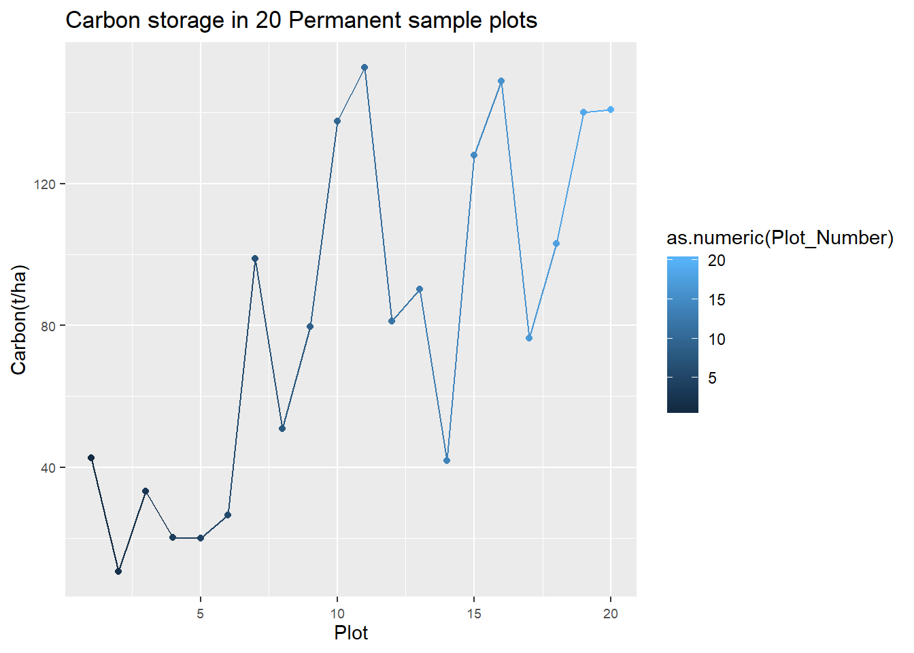
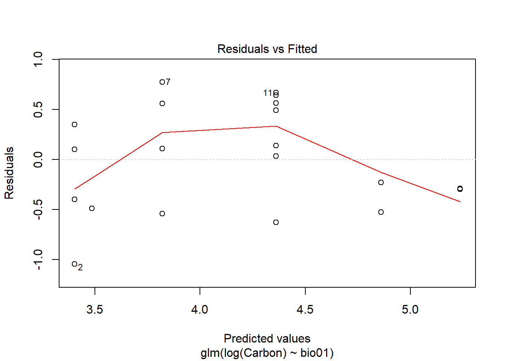
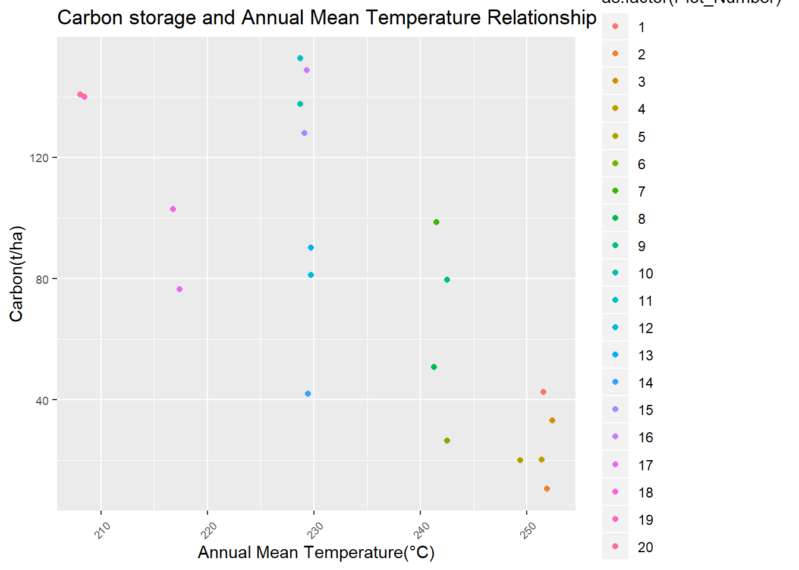
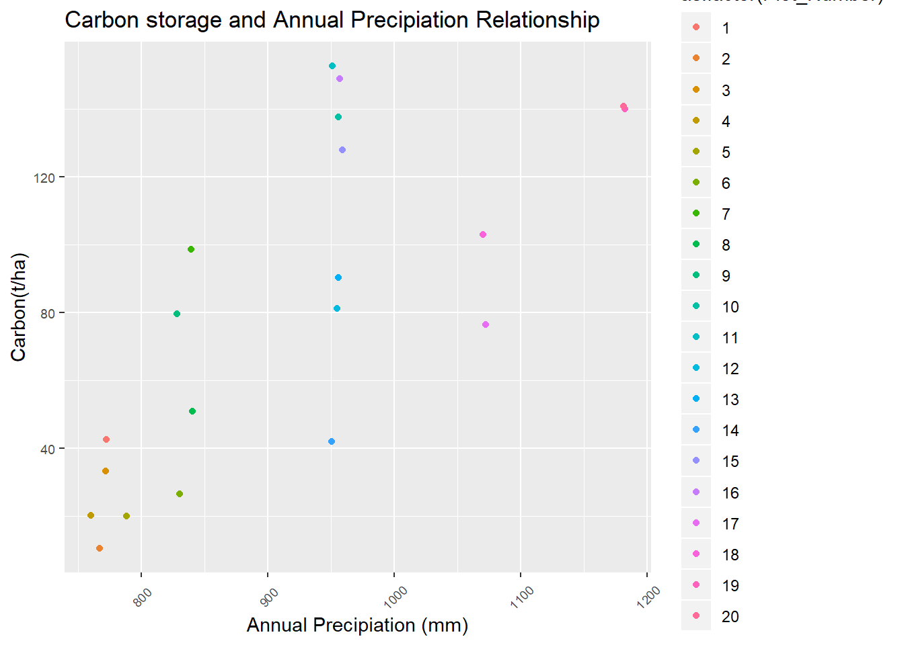

Fieldwork Analysis
ONEILL
10/11/2019
library(tidyverse)## -- Attaching packages ---------------------------------------------------------------------------------------------------------------------- tidyverse 1.2.1 --## v ggplot2 3.2.1 v purrr 0.3.2
## v tibble 2.1.3 v dplyr 0.8.3
## v tidyr 0.8.3 v stringr 1.4.0
## v readr 1.3.1 v forcats 0.4.0## -- Conflicts ------------------------------------------------------------------------------------------------------------------------- tidyverse_conflicts() --
## x dplyr::filter() masks stats::filter()
## x dplyr::lag() masks stats::lag()library(lubridate)##
## Attaching package: 'lubridate'## The following object is masked from 'package:base':
##
## datelibrary(BIOMASS)
library(ape)
library(ggplot2)Field_Data <- read.csv("Data/Popa_Fieldwork/Popa_Fieldwork(23-10-2019).csv", stringsAsFactors = F)Checking typos in taxonomy
Taxo <- correctTaxo(genus=Field_Data$Genus, species = Field_Data$Species)## Cache last modification time : 2019-10-29 15:08:46## Source cache:623, NA:4## Corrections TRUE:197, FALSE:405, SpNotFound:6, NA:4, NoMatch(low_score):15Field_Data$genusCorr <- Taxo$genusCorrected
Field_Data$speciesCorr <- Taxo$speciesCorrectedRetrieving APG III Families and Orders from Genus names
APG <- getTaxonomy(Field_Data$genusCorr, findOrder = T)
Field_Data$familyAPG <- APG$family
Field_Data$orderAPG <- APG$orderRETRIEVE WOOD DENSITY
dataWD <- getWoodDensity(genus=as.character(Field_Data$genusCorr),
species=as.character(Field_Data$speciesCorr),
stand=Field_Data$Plot)## The reference dataset contains 16467 wood density values## Your taxonomic table contains 65 taxasum(dataWD$levelWD == "species")## [1] 394sum(dataWD$levelWD == "genus")## [1] 214sum(!dataWD$levelWD%in%c("genus","species"))## [1] 19Field_Data$WD <- dataWD$meanWD
str(Field_Data)## 'data.frame': 627 obs. of 20 variables:
## $ Plot : int 1 1 1 1 1 1 1 1 1 1 ...
## $ Sub_Plot : int 1 1 1 2 4 5 6 6 7 8 ...
## $ Tree_Tag : int 8999 9000 8998 8997 8996 8995 8994 8993 8992 8989 ...
## $ X_Coordinate: num 0.8 1 3.2 3 4.8 2.4 1.5 3 1.6 4.4 ...
## $ Y_Coordinate: num 2 1.7 2.5 3.9 2.1 1.8 2.2 4 0.5 0.8 ...
## $ Local_Name : chr "Lunbo" "Tei" "Tei" "Ingyin" ...
## $ Genus : chr "Buchananaia" "Diospyros" "Diospyros" "Shorea" ...
## $ Species : chr "cochinchinensis" "burmanica" "burmanica" "siamensis" ...
## $ DBH_inch : num 6 4 4.8 14.3 6.9 4 4 4.9 4.2 8.3 ...
## $ DBH_cm : num 15.2 10.2 12.2 36.3 17.5 ...
## $ POM_m : num 1.3 1.3 1.3 1.3 1.3 1.3 1.3 1.3 1.3 1.3 ...
## $ Height_m : num 6 6 7 12 6.7 8 5.1 6 5.7 10 ...
## $ North : chr "20 53 0.33" "20 53 0.33" "20 53 0.33" "20 53 0.33" ...
## $ East : chr "95 13 0.56" "95 13 0.56" "95 13 0.56" "95 13 0.56" ...
## $ Elevation_m : num 364 364 364 364 364 ...
## $ genusCorr : chr "Buchanania" "Diospyros" "Diospyros" "Shorea" ...
## $ speciesCorr : chr "cochinchinensis" "burmanica" "burmanica" "siamensis" ...
## $ familyAPG : chr "Anacardiaceae" "Ebenaceae" "Ebenaceae" "Dipterocarpaceae" ...
## $ orderAPG : chr "Sapindales" "Ericales" "Ericales" "Malvales" ...
## $ WD : num 0.409 1.095 1.095 0.86 0.77 ...Computing AGB
AGBtree<-computeAGB(D=Field_Data$DBH_cm,
WD=Field_Data$WD,
H = Field_Data$Height_m)
# Compute AGB(Mg) per tree----
Field_Data$AGB_Mg <- AGBtree
# Compute Carbon (Mg) per tree --
Field_Data <- Field_Data %>%
mutate(Carbon_Mg= AGB_Mg*0.47) %>% mutate(C_Tree_Ha = Carbon_Mg/0.04)
str(Field_Data)## 'data.frame': 627 obs. of 23 variables:
## $ Plot : int 1 1 1 1 1 1 1 1 1 1 ...
## $ Sub_Plot : int 1 1 1 2 4 5 6 6 7 8 ...
## $ Tree_Tag : int 8999 9000 8998 8997 8996 8995 8994 8993 8992 8989 ...
## $ X_Coordinate: num 0.8 1 3.2 3 4.8 2.4 1.5 3 1.6 4.4 ...
## $ Y_Coordinate: num 2 1.7 2.5 3.9 2.1 1.8 2.2 4 0.5 0.8 ...
## $ Local_Name : chr "Lunbo" "Tei" "Tei" "Ingyin" ...
## $ Genus : chr "Buchananaia" "Diospyros" "Diospyros" "Shorea" ...
## $ Species : chr "cochinchinensis" "burmanica" "burmanica" "siamensis" ...
## $ DBH_inch : num 6 4 4.8 14.3 6.9 4 4 4.9 4.2 8.3 ...
## $ DBH_cm : num 15.2 10.2 12.2 36.3 17.5 ...
## $ POM_m : num 1.3 1.3 1.3 1.3 1.3 1.3 1.3 1.3 1.3 1.3 ...
## $ Height_m : num 6 6 7 12 6.7 8 5.1 6 5.7 10 ...
## $ North : chr "20 53 0.33" "20 53 0.33" "20 53 0.33" "20 53 0.33" ...
## $ East : chr "95 13 0.56" "95 13 0.56" "95 13 0.56" "95 13 0.56" ...
## $ Elevation_m : num 364 364 364 364 364 ...
## $ genusCorr : chr "Buchanania" "Diospyros" "Diospyros" "Shorea" ...
## $ speciesCorr : chr "cochinchinensis" "burmanica" "burmanica" "siamensis" ...
## $ familyAPG : chr "Anacardiaceae" "Ebenaceae" "Ebenaceae" "Dipterocarpaceae" ...
## $ orderAPG : chr "Sapindales" "Ericales" "Ericales" "Malvales" ...
## $ WD : num 0.409 1.095 1.095 0.86 0.77 ...
## $ AGB_Mg : num 0.033 0.039 0.0648 0.7292 0.0894 ...
## $ Carbon_Mg : num 0.0155 0.0183 0.0304 0.3427 0.042 ...
## $ C_Tree_Ha : num 0.387 0.459 0.761 8.568 1.05 ...Field_Data$Plot <- factor(Field_Data$Plot)
boxplot(C_Tree_Ha~Plot, data=Field_Data)
summary(aov(C_Tree_Ha ~ factor(Plot), data = Field_Data))## Df Sum Sq Mean Sq F value Pr(>F)
## factor(Plot) 19 1698 89.35 3.713 2.24e-07 ***
## Residuals 607 14608 24.07
## ---
## Signif. codes: 0 '***' 0.001 '**' 0.01 '*' 0.05 '.' 0.1 ' ' 1Field_Carbon <- Field_Data %>%
group_by(Plot) %>%
dplyr::summarise(Total_C = sum(C_Tree_Ha), Elevation = mean(Elevation_m)) %>% rename(Plot_Number=Plot)
ggplot(data=Field_Carbon, aes(x=as.numeric(Plot_Number),y =Total_C, color=as.numeric(Plot_Number)))+ geom_point()+ geom_line()+
labs(title = "Carbon storage in 20 Permanent sample plots",
x= "Plot",
y= "Carbon(t/ha)")+
theme(axis.text.x = element_text(size=7, angle = 0, vjust = 0.5),
axis.text.y = element_text(size = 7))
write.csv(Field_Carbon, file = "Data_Output/Field_Carbon.csv", row.names = F)hist(Field_Data$Height_m)
hist(Field_Data$DBH_cm)
ggplot(data = Field_Data, aes(y = Height_m, x = log(DBH_cm))) +
geom_point(color='green') +
geom_smooth(method = "lm", se = FALSE) convert from decimal minutes to decimal degrees
convert from decimal minutes to decimal degrees
library(tidyverse)
library(dplyr)
library(ggplot2)
library(stringr)
library(maps)##
## Attaching package: 'maps'## The following object is masked from 'package:purrr':
##
## maplibrary(mapdata)
library(maptools)## Loading required package: sp## Checking rgeos availability: FALSE
## Note: when rgeos is not available, polygon geometry computations in maptools depend on gpclib,
## which has a restricted licence. It is disabled by default;
## to enable gpclib, type gpclibPermit()library(sp)
library(raster)##
## Attaching package: 'raster'## The following objects are masked from 'package:ape':
##
## rotate, zoom## The following object is masked from 'package:dplyr':
##
## select## The following object is masked from 'package:tidyr':
##
## extractlibrary(BIOMASS)
library(ape)
library(magrittr)##
## Attaching package: 'magrittr'## The following object is masked from 'package:raster':
##
## extract## The following object is masked from 'package:purrr':
##
## set_names## The following object is masked from 'package:tidyr':
##
## extractlibrary(tinytex)
library(raster)
library(rgdal)## rgdal: version: 1.4-4, (SVN revision 833)
## Geospatial Data Abstraction Library extensions to R successfully loaded
## Loaded GDAL runtime: GDAL 2.2.3, released 2017/11/20
## Path to GDAL shared files: C:/Users/kyaws/Documents/R/win-library/3.6/rgdal/gdal
## GDAL binary built with GEOS: TRUE
## Loaded PROJ.4 runtime: Rel. 4.9.3, 15 August 2016, [PJ_VERSION: 493]
## Path to PROJ.4 shared files: C:/Users/kyaws/Documents/R/win-library/3.6/rgdal/proj
## Linking to sp version: 1.3-1library(measurements)
# Field_Data <- read.csv("Data/Popa_Fieldwork/Popa_Fieldwork(23-10-2019).csv", stringsAsFactors = F)
# head(Field_Data)
# sum(is.na(Field_Data$North))
# sum(is.na(Field_Data$East))
# str(Field_Data)
#
# Field_Data$North = gsub(' ', ' ',Field_Data$North)
# Field_Data$East = gsub(' ', ' ',Field_Data$East)
#
# Field_Data$Lat = conv_unit(Field_Data$North, from = 'deg_min_sec', to = 'dec_deg')
# Field_Data$Long = conv_unit(Field_Data$East, from = 'deg_min_sec', to = 'dec_deg')
#
# write.csv(Field_Data, file="Data_Output/FieldPlots.csv", row.names = F)
Field_Data <- read.csv("Data_Output/FieldPlots.csv")
world2HiresMapEnv## [1] "R_MAPDATA_DATA_DIR"data(wrld_simpl)
myanmar <- wrld_simpl[wrld_simpl$NAME=="Burma",]
FPopaPlots <- Field_Data %>% group_by(Plot) %>% summarise(Long= mean (Long),Lat=mean(Lat))
coords = cbind(FPopaPlots$Long, FPopaPlots$Lat)
llCRS <- CRS("+init=epsg:4326")
Coords_sp <- SpatialPoints(coords, proj4string = llCRS)
Coords_sp <- spTransform(Coords_sp, "+init=epsg:4326")
spdf = SpatialPointsDataFrame(Coords_sp,data = FPopaPlots)
writeOGR(spdf,"FieldPopa_plots.shp", layer="Coords_sp", driver = "ESRI Shapefile")
plot(myanmar)plot(Coords_sp)
EVI2018Popa <-raster("Data/EVI2018_Popa.tif")
mypts <-readOGR("Field_Plots_shapefile/FieldPopa_plots.shp")## OGR data source with driver: ESRI Shapefile
## Source: "D:\PhD-Web\Field_Plots_shapefile\FieldPopa_plots.shp", layer: "FieldPopa_plots"
## with 20 features
## It has 3 fieldsEVI2018Popa <- trim(EVI2018Popa)
plot(EVI2018Popa)
mydata <- raster::extract(EVI2018Popa, mypts)
plot(mypts, add = TRUE, cex=0.1)class(mydata)## [1] "numeric"EVI2018_values <- as.data.frame(mydata)
EVI2018 <- EVI2018_values %>% rename(EVI2018=mydata)
Plot_names <- read.csv("Data_Output/FieldPlots.csv",stringsAsFactors = F)
Plots_EVI2018 <- Plot_names %>% group_by(Plot) %>% summarise(Long = mean(Long),Lat=mean(Lat))
EVI2018_Popa <- bind_cols(Plots_EVI2018,EVI2018)
EVI2018_Popa <- EVI2018_Popa %>% rename(Plot_Number=Plot)Joining Field Carbon and EVI
Field_Carbon <- read.csv("Data_Output/Field_Carbon.csv", stringsAsFactors = F)
EVI2018_Popa$Carbon <- Field_Carbon$Total_C
EVI2018_Popa$Elevation <- Field_Carbon$Elevation
Carbon_EVI_Popa <- EVI2018_Popa
plot(Carbon_EVI_Popa$Carbon, Carbon_EVI_Popa$EVI2018)
plot(Carbon_EVI_Popa$Carbon, Carbon_EVI_Popa$Elevation)write.csv(Carbon_EVI_Popa,file = "Data_Output/Carbon_EVI_Popa.csv", row.names = F)Carbon and environmental conditions relationship
BIO1 = Annual Mean Temperature
BIO2 = Mean Diurnal Range (Mean of monthly (max temp - min temp))
BIO3 = Isothermality (BIO2/BIO7) (* 100)
BIO4 = Temperature Seasonality (standard deviation *100)
BIO5 = Max Temperature of Warmest Month
BIO6 = Min Temperature of Coldest Month
BIO7 = Temperature Annual Range (BIO5-BIO6)
BIO8 = Mean Temperature of Wettest Quarter
BIO9 = Mean Temperature of Driest Quarter
BIO10 = Mean Temperature of Warmest Quarter
BIO11 = Mean Temperature of Coldest Quarter
BIO12 = Annual Precipitation
BIO13 = Precipitation of Wettest Month
BIO14 = Precipitation of Driest Month
BIO15 = Precipitation Seasonality (Coefficient of Variation)
BIO16 = Precipitation of Wettest Quarter
BIO17 = Precipitation of Driest Quarter
BIO18 = Precipitation of Warmest Quarter
BIO19 = Precipitation of Coldest Quarter
I performed a simple liner regression analysis on the two variables Carbon and Annual precipitaion(AP)/Annual Mean Temperature(AMT). I wish to determine wheter the AP/AMT varible is a significant predictor of the Carbon Variable.
Carbon_EVI_Popa <- read.csv("Data_Output/Carbon_EVI_Popa.csv", stringsAsFactors = F)
WCL_Popa <- read.csv("Data_Output/WCL_Popa.csv", stringsAsFactors = F) %>% rename(Plot_Number=Plot)
CEVI_WCL_Popa <- Carbon_EVI_Popa %>% inner_join(WCL_Popa, by = "Plot_Number",suffix = c(".EVI", ".WCL"), all = T) %>% rename(Long= Long.EVI, Lat=Lat.EVI) %>% dplyr::select(-c(Long.WCL, Lat.WCL))
plot(Carbon~bio01, data = CEVI_WCL_Popa)glm.AMT <- glm(log(Carbon)~bio01,data=CEVI_WCL_Popa, family = gaussian(link = "identity"))
summary(glm.AMT)##
## Call:
## glm(formula = log(Carbon) ~ bio01, family = gaussian(link = "identity"),
## data = CEVI_WCL_Popa)
##
## Deviance Residuals:
## Min 1Q Median 3Q Max
## -1.0457 -0.4193 0.0682 0.5074 0.7733
##
## Coefficients:
## Estimate Std. Error t value Pr(>|t|)
## (Intercept) 13.907147 2.006384 6.931 1.77e-06 ***
## bio01 -0.041685 0.008561 -4.869 0.000123 ***
## ---
## Signif. codes: 0 '***' 0.001 '**' 0.01 '*' 0.05 '.' 0.1 ' ' 1
##
## (Dispersion parameter for gaussian family taken to be 0.286772)
##
## Null deviance: 11.9612 on 19 degrees of freedom
## Residual deviance: 5.1619 on 18 degrees of freedom
## AIC: 35.669
##
## Number of Fisher Scoring iterations: 2plot(glm.AMT)

ggplot(data=CEVI_WCL_Popa, aes(x=bio01, y = Carbon, color=as.factor(Plot_Number)))+ geom_jitter()+
labs(title = "Carbon storage and Annual Mean Temperature Relationship",
x= "Annual Mean Temperature(°C)",
y= "Carbon(t/ha)")+
theme(axis.text.x = element_text(size=7, angle = 45, vjust = 0.5),
axis.text.y = element_text(size = 7))
plot(Carbon~bio12, data = CEVI_WCL_Popa)glm.AMT <- glm(log(Carbon)~bio12,data=CEVI_WCL_Popa, family = gaussian(link = "identity"))
summary(glm.AMT)##
## Call:
## glm(formula = log(Carbon) ~ bio12, family = gaussian(link = "identity"),
## data = CEVI_WCL_Popa)
##
## Deviance Residuals:
## Min 1Q Median 3Q Max
## -1.13521 -0.48973 0.05025 0.55358 0.79696
##
## Coefficients:
## Estimate Std. Error t value Pr(>|t|)
## (Intercept) 0.1733467 0.9106709 0.190 0.851165
## bio12 0.0043382 0.0009826 4.415 0.000334 ***
## ---
## Signif. codes: 0 '***' 0.001 '**' 0.01 '*' 0.05 '.' 0.1 ' ' 1
##
## (Dispersion parameter for gaussian family taken to be 0.3190467)
##
## Null deviance: 11.9612 on 19 degrees of freedom
## Residual deviance: 5.7428 on 18 degrees of freedom
## AIC: 37.802
##
## Number of Fisher Scoring iterations: 2plot(glm.AMT)

ggplot(data=CEVI_WCL_Popa, aes(x=bio12, y = Carbon, color=as.factor(Plot_Number)))+ geom_jitter()+
labs(title = "Carbon storage and Annual Precipiation Relationship",
x= "Annual Precipiation (mm)",
y= "Carbon(t/ha)")+
theme(axis.text.x = element_text(size=7, angle = 45, vjust = 0.5),
axis.text.y = element_text(size = 7))
write.csv(CEVI_WCL_Popa, file="Data_Output/Carbon_EVI_Popa.csv", row.names = F)Load up the values extracted from the AVitabile AGB Map
Avt_Carbon_Popa <- read.csv("Data_Output/Avitabile_AGB_Popa.csv", stringsAsFactors = F)
All_Plot_info <- read.csv("Data_Output/Carbon_EVI_Popa.csv", stringsAsFactors = F)
AVt_Fieldwork <- Avt_Carbon_Popa %>% inner_join(All_Plot_info, by = "Plot_Number",suffix = c(".Avt", ".FW"), all = T) %>% rename(Lat=Lat.FW, Long = Long.FW) %>% dplyr::select(-c(Lat.Avt, Long.Avt))
attach(AVt_Fieldwork)## The following object is masked _by_ .GlobalEnv:
##
## EVI2018plot(Carbon~Mean_Avt_Carbon, data = AVt_Fieldwork)
glm.Avt_FW <- glm(Carbon~Mean_Avt_Carbon,data = AVt_Fieldwork, family = gaussian(link = "identity"))
summary(glm.Avt_FW)##
## Call:
## glm(formula = Carbon ~ Mean_Avt_Carbon, family = gaussian(link = "identity"),
## data = AVt_Fieldwork)
##
## Deviance Residuals:
## Min 1Q Median 3Q Max
## -64.109 -40.449 -5.727 36.641 74.198
##
## Coefficients:
## Estimate Std. Error t value Pr(>|t|)
## (Intercept) 109.3329 23.3576 4.681 0.000186 ***
## Mean_Avt_Carbon -0.6870 0.5075 -1.354 0.192543
## ---
## Signif. codes: 0 '***' 0.001 '**' 0.01 '*' 0.05 '.' 0.1 ' ' 1
##
## (Dispersion parameter for gaussian family taken to be 2252.094)
##
## Null deviance: 44666 on 19 degrees of freedom
## Residual deviance: 40538 on 18 degrees of freedom
## AIC: 215.04
##
## Number of Fisher Scoring iterations: 2plot(glm.Avt_FW)
ggplot(data=AVt_Fieldwork, aes(x=Mean_Avt_Carbon, y = Carbon, color=as.factor(Plot_Number)))+ geom_jitter()+
labs(title = "Fieldwork Carbon storage and Avitabile Carbon Relationship",
x=expression(bold(paste("Carbon predicted by Avitabile t ", ha^bold("-1")))),
y= expression(bold(paste("Carbon calculated from fieldwork t ", ha^bold("-1")))))+
theme(axis.text.x = element_text(size=7, angle = 45, vjust = 0.5),
axis.text.y = element_text(size = 7))